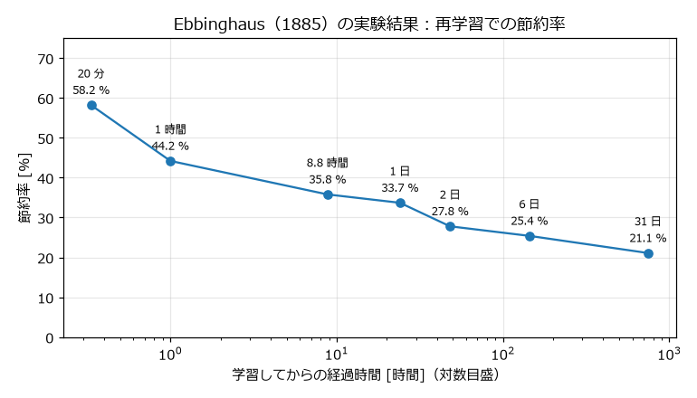
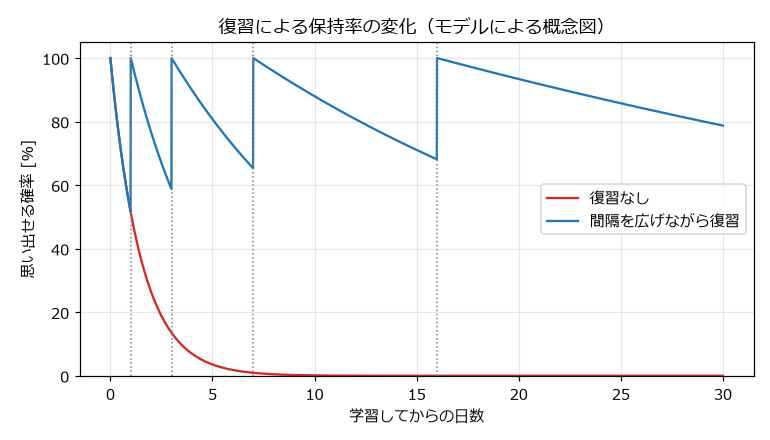
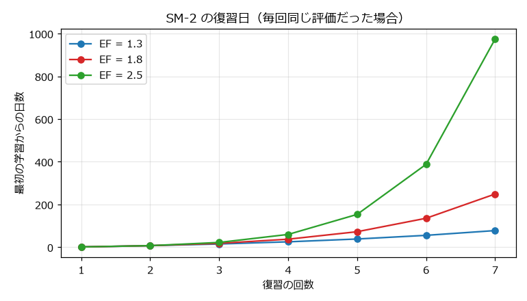

6. 記憶を定着させる
第 5 章では、検索練習と分散学習が最も効果の確かな学習法であることを見た。本章では、この 2 つを組み合わせた「間隔反復」を中心に、覚えた内容を長く保つための具体的な方法を説明する。忘却曲線の正しい読み方、間隔反復のアルゴリズム、フラッシュカードの作り方、記憶術とその限界を扱う。
6.1. エビングハウスの忘却曲線
忘却曲線は、学習した内容が時間とともにどのように忘れられていくかを示した曲線である。ドイツの心理学者 Ebbinghaus（1885）が、自分自身を被験者として行った実験に基づいている。
6.1.1. 実験の方法
Ebbinghaus は、意味をもたない音節（例えば「DAX」「BUP」のような子音・母音・子音の組み合わせ。無意味つづりと呼ぶ）を十数個並べたリストを作り、2 回続けて間違えずに暗唱できるまで繰り返し学習した。そして、一定の時間が経った後に同じリストを再び学習し、最初の学習に比べてどれだけ少ない時間（または回数）で再び暗唱できるようになったかを測った。この節約された割合を節約率と呼ぶ。
ここで \(T_1\) は最初の学習にかかった時間、\(T_2\) は再学習にかかった時間である。例えば、最初の学習に 10 分かかり、再学習に 4 分かかったなら、節約率は 60 % である。
6.1.2. 実験の結果
Ebbinghaus の結果を 図 6.1 に示す。節約率は学習直後に急激に下がり、その後はゆるやかに下がっていく。20 分後には約 58 %、1 日後には約 34 %、31 日後には約 21 % であった。


図 6.1 Ebbinghaus（1885）の実験結果（横軸は対数目盛）
Murre と Dros（2015）は、Ebbinghaus と同じ方法で実験を再現し、よく似た忘却曲線が得られることを確かめた。忘却曲線は、心理学で最もよく再現される結果の 1 つである。
6.1.3. よくある誤解
忘却曲線は「人は 1 日で学んだことの 7 割を忘れる」のように紹介されることがある。しかし、この紹介には以下の誤りがある。
縦軸は「覚えている割合」ではなく節約率である。1 日後の節約率 34 % は、「再学習が最初の学習より 34 % 少ない時間で済んだ」という意味であり、「66 % を忘れた」という意味ではない。
学習した材料は、意味をもたない音節のリストである。意味のある内容、既有知識と結びつく内容、理解した内容は、これよりずっとゆっくり忘れられる。
被験者は Ebbinghaus 本人 1 人である（Murre と Dros の再現実験も被験者は 1 人）。
忘却曲線から得られる妥当な教訓は、以下の 2 点である。
忘却は学習の直後に最も速く進み、時間が経つにつれてゆるやかになる。
一度忘れたように見えても、記憶は完全には失われていない。再学習は最初の学習より速く済む。
6.1.4. 忘却のモデル
忘却を数式で表すモデルはいくつかある。簡単なものは、思い出せる確率 \(R\) を、学習からの経過時間 \(t\) の指数関数で表すモデルである。
ここで \(S\) は記憶の安定性を表す値であり、\(S\) が大きいほどゆっくり忘れる。実際の忘却のデータは、指数関数よりも、べき関数のほうがよく当てはまることが知られている（Wixted と Ebbesen, 1991）。しかし、次の節で説明する間隔反復の考え方を理解するには、このモデルで十分である。
6.2. 間隔反復の考え方
エビデンスの強さ：強い（間隔を空けて思い出す練習を繰り返すこと）
間隔反復とは、覚えたい内容を、間隔を徐々に広げながら繰り返し思い出す方法である。第 5 章の検索練習と分散学習を組み合わせたものと言える。
間隔反復の背景にある考え方は、以下の通りである。
忘れかけたころに思い出すと、記憶の安定性（前の節のモデルの \(S\)）が大きく高まる。
安定性が高まると、次に忘れかけるまでの時間が長くなる。したがって、次の復習までの間隔を広げられる。
繰り返すたびに間隔が広がるので、少ない復習の回数で長期間覚えておける。
図 6.2 は、前の節のモデルを使って、復習の効果を模式的に示したものである。ここでは、復習のたびに思い出せる確率が 100 % に戻り、安定性が 2.5 倍になると仮定した。復習しない場合は数日で思い出せなくなるが、1 日後、3 日後、7 日後、16 日後と間隔を広げながら 4 回復習すると、30 日後も高い確率で思い出せる。


図 6.2 復習による保持率の変化（モデルによる模式図。数値は仮定に基づく）
この図の数値はモデルの仮定によるものであり、実際の忘却の速さは内容や学習者によって大きく異なる。重要なのは、復習の間隔を少しずつ広げていけば、少ない手間で記憶を保てるという考え方である。
6.3. ライトナー方式
ライトナー方式は、ドイツのジャーナリスト Leitner が 1970 年代に考案した、紙のフラッシュカードと箱を使う間隔反復の方法である。いくつかの変種があるが、典型的な方法は以下の通りである（図 6.3）。
箱を 5 つ用意し、1 から 5 の番号を付ける。番号が大きい箱ほど、復習の間隔を長くする（例：箱 1 は毎日、箱 2 は 2 日ごと、箱 3 は 4 日ごと、箱 4 は 8 日ごと、箱 5 は 16 日ごと）。
新しいカードはすべて箱 1 に入れる。
復習の日になった箱のカードを 1 枚ずつ取り出し、答えを思い出す。
正しく思い出せたカードは、1 つ番号の大きい箱に移す。
思い出せなかったカードは、どの箱にあったかに関係なく、箱 1 に戻す。
箱 5 で正しく思い出せたカードは、十分に覚えたものとして取り除く（または、さらに長い間隔の箱に移す）。
図 6.3 ライトナー方式でのカードの移動
ライトナー方式の利点は、コンピュータを使わずに実行できることと、仕組みが単純で分かりやすいことである。覚えにくいカードほど頻繁に、覚えたカードほどまれに復習することになるので、復習の手間を覚えにくいカードに集中できる。
6.4. SM-2 などのアルゴリズム
コンピュータを使えば、カードごとに復習の間隔をより細かく調整できる。その代表が、ポーランドの Wozniak が 1987 年に開発した SM-2 というアルゴリズムである。SM-2 は、無料のフラッシュカードソフトウェア Anki などで長く使われてきた。
6.4.1. SM-2 の手順
SM-2 では、カードごとに「易しさ係数」（EF。初期値は 2.5）と、復習の回数 \(n\) を記録する。復習のたびに、学習者は思い出せた程度を 0〜5 の 6 段階で自己評価する（5 は完全に思い出せた、3 は苦労して思い出せた、2 以下は思い出せなかった）。
\(n\) 回目の復習から次の復習までの間隔 \(I(n)\)（日）は、以下のように決める。
易しさ係数は、復習のたびに、評価 \(q\) を使って以下のように更新する。
ただし、更新後の値が 1.3 より小さくなる場合は 1.3 とする。この式によると、評価が 5 なら EF は 0.1 増え、4 なら変わらず、3 なら 0.14 減る。易しいカードほど間隔が速く広がり、難しいカードほど間隔の広がりが遅くなる。
評価が 3 未満（思い出せなかった）の場合は、易しさ係数は変えずに、復習の回数を最初に戻す。つまり、そのカードは翌日に復習し、その次は 6 日後に復習する、という最初の間隔からやり直す。
図 6.4 は、易しさ係数ごとに、毎回同じ評価で思い出せた場合の復習日を示したものである。易しさ係数が 2.5 のカードは、7 回の復習で 1 年以上先まで間隔が広がる。


図 6.4 SM-2 での復習日（易しさ係数が変わらない場合の計算例）
6.4.2. 新しいアルゴリズム
SM-2 の後も、間隔反復のアルゴリズムは改良が続いている。開発元の SuperMemo は、その後も新しいアルゴリズムを開発している。また、Anki では、学習者ごとの復習の記録から忘却のモデルの値を推定する FSRS というアルゴリズムも選べるようになった。
ただし、学習者にとって、アルゴリズムの細かな違いは本質的ではない。間隔を広げながら思い出す練習を続けること自体が最も重要であり、どのソフトウェアを使うか、どのアルゴリズムを選ぶかで悩むより、毎日の復習を続けるほうが大切である。
6.5. フラッシュカードの作り方
間隔反復の効果は、フラッシュカード（表に問い、裏に答えを書いたカード）の質に大きく左右される。よいカードを作るための指針を以下に示す。
6.5.1. 1 枚に 1 つの事実
1 枚のカードに多くの情報を詰め込まない。例えば「フランス革命の原因を 5 つ挙げよ」というカードは、5 つのうち 1 つでも忘れると不正解になり、何度も復習することになる。原因ごとに 1 枚ずつのカードに分けるほうが、効率よく覚えられる。
6.5.2. 問いを明確にする
答えが 1 つに定まる問いにする。「光合成について」のような問いでは、何を答えればよいかが分からない。「光合成で、光のエネルギーを使って水を分解したときに発生する気体は何か」のように、答えが明確になるように書く。
6.5.3. 文脈を付ける
外国語の単語や用語を、単独で覚えるのではなく、例文や使われる場面と一緒に覚える。例えば英単語なら、単語と訳語だけでなく、単語を空欄にした例文を表に書き、空欄に入る単語を答えるカードにする。
6.5.4. 理解してからカードにする
理解していない内容をカードにして丸暗記しても、応用が利かない。まず教材で内容を理解し、その後で、理解した内容を忘れないためにカードを使う。カードは理解の代わりではなく、理解を保つための道具である。
6.5.5. 1 回の正解で終わりにしない
カードを使った学習では、一度正解したカードを束から取り除きたくなる。しかし、1 回思い出せただけでは、記憶はまだ不安定である。Rawson と Dunlosky（2011）は、1 回の学習の中で正しく思い出せるまで練習し、それを日を変えて何度か繰り返す方法（連続的再学習）が、長期的な記憶に非常に効果的であることを示した。間隔反復のソフトウェアは、この考え方を自動化したものと言える。
また、Kornell（2009）は、カードを小さな束に分けて各束を続けて繰り返すよりも、大きな束のまま通して繰り返し、同じカードの間隔を空けるほうが成績がよいことを示した。ところが、多くの参加者は、小さな束で繰り返すほうが効果的だと感じていた。ここにも第 4 章の流暢性の錯覚が現れている。
6.5.6. 作りすぎない
カードを作るのは手軽なので、つい大量に作ってしまう。しかし、カードが増えると毎日の復習の量も増え、続けられなくなる。カードにするのは、本当に覚えておく必要があり、かつ思い出す練習が必要な内容に限る。毎日の復習にかかる時間が負担になり始めたら、新しいカードを追加する量を減らす。
6.6. 記憶術とその限界
記憶術（ニーモニクス）とは、覚えにくい情報を、覚えやすい形に変換して記憶する技術である。
6.6.1. 場所法
エビデンスの強さ：中程度（順序のある項目の記憶）
場所法（記憶の宮殿）は、よく知っている場所（自宅の部屋など）の道順に沿って、覚えたい項目を 1 つずつ置いていくイメージを思い浮かべる方法である。思い出すときは、頭の中でその道順をたどり、置いた項目を順に回収する。古代ギリシャ・ローマの時代から使われており、記憶力の競技の選手の多くもこの方法を使っている。
Dresler ら（2017）は、記憶力の競技の上位選手の脳と、一般の人の脳を比較した。さらに、一般の人に場所法を 6 週間訓練させたところ、単語のリストの記憶成績が大幅に向上し、脳の結合のパターンも選手に近づいた。場所法は、優れた記憶力が特別な才能ではなく、技術によって身につけられることを示している。
6.6.2. 語呂合わせとキーワード法
エビデンスの強さ：弱い（長期的な記憶の手段として）
語呂合わせは、数字や項目の並びを、音の似た言葉の並びに置き換えて覚える方法である。日本では、年号や元素の周期表の覚え方としてよく使われる。キーワード法は、外国語の単語を、音の似た母語の単語とイメージで結びつける方法である。
これらの方法は、短期的には効果があるが、Dunlosky ら（2013）はキーワード法の有用性を「低い」と評価した。キーワードを作るのに手間がかかり、時間が経つとキーワード自体を忘れてしまうことがあるためである。
6.6.3. 記憶術の限界
記憶術には以下の限界がある。
覚えられるのは、主にばらばらの項目やその順序である。概念の理解や、知識どうしの関係は記憶術では身につかない。
項目ごとにイメージや語呂を作る手間がかかる。
記憶術で覚えた知識は、記憶術の手がかりを経由しないと思い出せないことがあり、すばやく使うのに向かない。
記憶術は、どうしても丸暗記が必要な情報（例えば、順序に意味のない項目のリスト）に限って使うのがよい。意味のある内容は、第 5 章と第 7 章の方法で理解しながら覚えるほうが、長く使える知識になる。
6.7. 覚えるべきものと覚えなくてよいもの
インターネットで何でも調べられる時代に、知識を覚える必要はあるのだろうか。結論から言えば、ある。理由は以下の通りである。
第 2 章で見たように、既有知識（スキーマ）は新しい情報の理解を助ける。頭の中に知識がなければ、調べた情報を理解することも、その質を判断することも難しい。
第 3 章で見たように、考えることは作業記憶の中で行われ、作業記憶は長期記憶にある知識を使って容量の限界を補っている。基本的な知識をいちいち調べていては、作業記憶が調べることに使われ、考えることに使えない。
何を調べればよいかを知るにも、知識が必要である。
一方で、すべてを覚える必要はない。覚えるかどうかは、以下のような基準で判断するとよい。
覚える価値が高いもの |
調べればよいもの |
|---|---|
頻繁に使う基本的な用語、概念、事実 |
めったに使わない細かな事実や数値 |
他の知識を理解するための土台になるもの |
必要なときに調べれば済むもの（例：関数の引数の順序、法令の条文の番号） |
調べている余裕がない場面で使うもの（例：会話で使う外国語の語彙、試験に出る知識） |
変化が速く、覚えてもすぐに古くなるもの |
覚える価値が高いものは、間隔反復で計画的に覚える。調べればよいものは、どこを調べれば分かるか（索引、公式ドキュメント、自分のノート）を知っておけば十分である。
6.8. この章のまとめ
忘却曲線は、無意味な音節のリストについての節約率の曲線である。「1 日で 7 割忘れる」という紹介は誤りである。
忘却は学習の直後に最も速く進み、その後はゆるやかになる。
間隔反復は、間隔を徐々に広げながら思い出す練習を繰り返す方法であり、少ない復習で長く覚えておける。
ライトナー方式は紙のカードと箱で、SM-2 などのアルゴリズムはコンピュータで間隔反復を実行する。アルゴリズムの選択より、復習を続けることが大切である。
フラッシュカードは、1 枚に 1 つの事実、明確な問い、文脈を付ける、理解してから作る、作りすぎない、を守る。
記憶術はばらばらの項目の記憶には有効だが、理解の代わりにはならない。
調べられる時代でも、基本的な知識を覚えることは、理解と思考の土台として重要である。
6.9. やってみよう
今学んでいる分野で、覚える価値が高い用語や事実を 20 個選び、フラッシュカードを作る。紙のカードでもソフトウェアでもよい。
作ったカードを、ライトナー方式または間隔反復のソフトウェアで 2 週間復習する。毎日の復習にかかった時間を記録する。
作ったカードの中から、2 週間たっても覚えにくいカードを選び、本章の指針（1 枚に 1 つの事実、文脈を付けるなど）に従って作り直す。